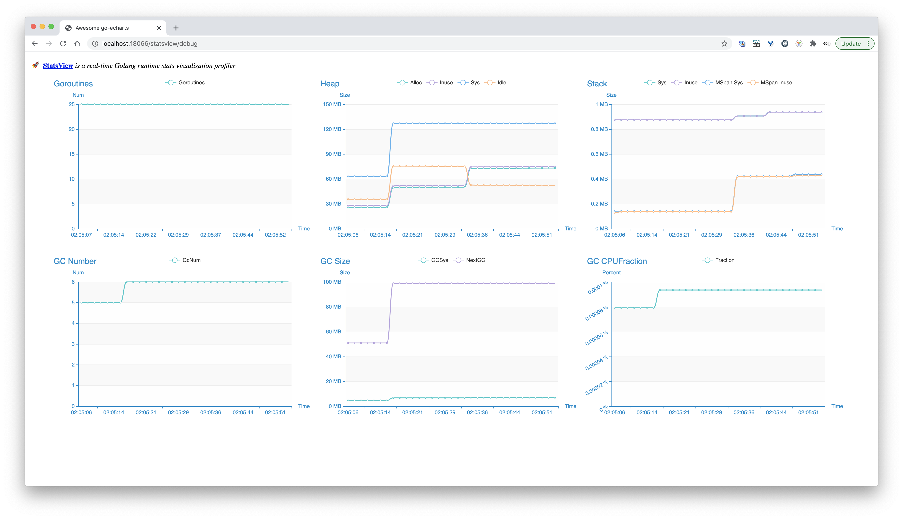

通过这个 Runtime 统计信息可视化库学到了什么？
大家好，我是站长 polarisxu。
掌握系统运行状态，知道系统哪些地方可能存在问题，方便进行优化，这是一个实际系统必备的。裸奔，对系统一无所知，迟早是要出大事的。
在 Go 语言中，官方标准库提供了方法，让我们能够获得内存分配、GC 和 Goroutine 等情况。比如内存、GC 等情况，可以通过 runtime.MemStats 获取：https://docs.studygolang.com/pkg/runtime/#MemStats，Goroutine 数量可以通过 runtime.NumGoroutine() 函数获得。
一般我们我们需要自己解析 MemStats 信息、做展示，也可以做图表。
之前推荐过一个在浏览器中实时查看 Go 应用程序运行时统计信息（GC，MemStats 等）的库：statsviz 。今天给大家推荐另外一个库：https://github.com/go-echarts/statsview，这是这两天刚出来的。
看长什么样：

我们可以运行下面这段代码得到类似上面的图：
package main
import (
"github.com/go-echarts/statsview"
"time"
"math/rand"
"strconv"
)
func main() {
go work()
mgr := statsview.New()
// Start() runs a HTTP server at `localhost:18066` by default.
mgr.Start()
// Stop() will shutdown the http server gracefully
// mgr.Stop()
}
func work() {
// Generate some allocations
m := map[string][]byte{}
for {
b := make([]byte, 512+rand.Intn(16*1024))
m[strconv.Itoa(len(m)%(10*100))] = b
if len(m)%(10*100) == 0 {
m = make(map[string][]byte)
}
time.Sleep(10 * time.Millisecond)
}
}
01 如何使用
都 Go1.15.x 了，请使用 go module。
statsview 的使用较简单。
- import “github.com/go-echarts/statsview”
- mgr := statsview.New()
- mgr.Start()
- 打开浏览器访问：http://localhost:18066/debug/statsview
- 尽情享受吧~
此外，可以通过 viewer.SetConfiguration(opts …Option)改变一些行为，包括：
// WithInterval sets the interval(in millisecond) of collecting and pulling metrics
// default -> 1500
WithInterval(interval int) Option
// WithMaxPoints sets the maximum points of each chart series
// default -> 40
WithMaxPoints(n int) Option
// WithTemplate sets the rendered template which fetching stats from the server and
// handling the metrics data
WithTemplate(t string) Option
// WithAddr sets the listen address
// default -> "localhost:18066"
WithAddr(addr string) Option
// WithTimeFormat sets the time format for the line-chart Y-axis label
// default -> "15:04:05"
WithTimeFormat(s string) Option
// WithTheme sets the theme of the charts
// default -> Macarons
//
// Optional:
// * ThemeWesteros
// * ThemeMacarons
WithTheme(theme Theme) Option
例如修改默认端口：
viewer.SetConfiguration(view.WithAddr("localhost:8087")
不像之前介绍的 statsviz，statsview 固定使用 net/http，所以集成到项目中只需要让它在单独的一个 goroutine 中运行，单独的端口即可。
go func() {
mgr := statsview.New()
mgr.Start()
}()
其实这也是在介绍 statsviz 时的最佳实践。毕竟 runtime 信息属于系统内部信息，不适合暴露给公网用户。
02 学习相关实现
和 statsviz 不同，该库没有使用 WebSocket 协议，直接通过轮询的方式不断获取数据。另外，因为 statsview 是 go-echarts 出的，因此画图也使用的是 go-echarts 库。
多参数控制
关于 statsview，有一个知识点想跟大家讲一下，那就是多参数控制。
上文提到库可以通过 viewer.SetConfiguration(opts …Option) 函数定制一些行为，其中 Option 是一个函数类型：
type Option func(c *config)
其中 config 的定义如下：
type config struct {
Interval int
MaxPoints int
Template string
Addr string
TimeFormat string
Theme Theme
}
该类型的字段用于控制该库的一些行为。它有一个默认的实例：
var defaultCfg = &config{
Interval: DefaultInterval,
MaxPoints: DefaultMaxPoints,
Template: DefaultTemplate,
Addr: DefaultAddr,
TimeFormat: DefaultTimeFormat,
Theme: DefaultTheme,
}
面对这样的需求，通常的解决方案是：
- 将 config 默认实例导出，使用方直接修改对应字段的值；
- 通过提供一系列函数实现修改，比如 SetInterval(int)
方案一封装性不好，暴露太多细节；而方案二的问题在于，config 的字段类型不一致，通常方案不够优雅。该库的实现方式是定义一个 Option 类型，然后提供一系列具有相似签名的函数来控制这些配置，即上文列出来的 WithXXX 类函数，看其中的一个实现：
// WithAddr sets the listening address
func WithAddr(addr string) Option {
return func(c *config) {
c.Addr = addr
}
}
这样通过 WithXXX 函数得到一系列 Option 实例，而 viewer.SetConfiguration 接收一系列 Option 实例，所以使用是就这样了：
viewer.SetConfiguration(viewer.WithTheme(viewer.ThemeWalden), view.WithAddr("localhost:8087"))
还有其他案例吗？
colly 中的案例
Colly 是一个 Go 语言实现的，快速的、优雅的 Scraper 和 Crawler 框架。它的实例化函数比较“独特”：
func NewCollector(options ...func(*Collector)) *Collector
实例化一个类型，一般有以下几种方式：
- new(T)
- T{} 或 &T{}
- 自定义的工厂函数
对于类型中的成员，我们可以在实例化时传递，如第 2、3 种方式；也可以在生成实例后，通过 t.Field 的形式赋值（前提是导出的成员）。
一般地，我们在定义工厂函数时，要为类型成员初始化，会给工厂函数定义相应的参数。而 Collector 类型的工厂函数参数，却是一个或多个函数。这样设计有以下方面的原因：
- Collector 类型的成员较多；
- 成员的类型多样；
- 不要求所有的成员必须指定值；
针对这些问题，Collector 工厂类 NewCollector() 巧妙的使用不定参数，而且类型是 func(*Collector)，这样可以有选择的配置一个或多个选项，很好地解决了上面的三个问题。它的源码如下：
func NewCollector(options ...func(*Collector)) *Collector {
c := &Collector{}
c.Init()
for _, f := range options {
f(c)
}
c.parseSettingsFromEnv()
return c
}
同时，通过函数的方式来配置选项，就好比很多面向对象语言中的 Set 方法，可以在里面有其他的一些逻辑判断，而不仅仅是设置一个值。比如以下配置函数：
func Debugger(d debug.Debugger) func(*Collector)
BigCache 中的案例
BigCache 是一个高性能缓存库。获得它的一个实例是这样的形式：
bigcache.NewBigCache(bigcache.DefaultConfig(10 * time.Minute))
即它的构造函数（New 函数）接收一个 Config 对象，这也是要控制多个配置。
因为 Go 不是完全的面向对象语言。当类型中有较多成员，且可以通过外部控制时，根据封装的原则，一般不建议将这些字段导出（公开），但这样一来构造函数就需要能接收很多参数。在 Go 中有两种较常见的设计方法。
1）通过另外一个结构体来控制
比如 bigcache 包中的 Config 结构体。这么做有什么好处？
一方面控制了 BigCache 类型的行为，避免实例化后可以随意更改，起到了封装的作用。另一方面，让构造函数更简洁，只需要接收一个 Config 即可（注意最好使用 Config 值类型，而不是指针）。而且可以通过提供一些 Config 的默认值来做到更易用，比如 bigcache.DefaultConfig() 函数就是这样的例子。
2）通过一个函数类型来控制
比如我们通过这种方式替换 bigcache 包的 Config 结构体。
type BigCacheOption func(*BigCache)
func ShardsNum(shards int) BigCacheOption {
return func(c *BigCache) {
c.shards = shards
}
}
func LifeWindow(eviction time.Duration) BigCacheOption {
return func(c *BigCache) {
c.lifeWindow = uint64(eviction.Seconds())
}
}
// 提供更多的配置选项函数
...
通过定义一个函数类型 BigCacheOption 来控制。对 BigCache 类型中非导出的字段，提供相应的函数，该函数返回 BigCacheOption 类型。
针对这种方式，BigCache 的构造函数需要改为如下的形式：
func NewBigCache(options ...BigCacheOption) (*BigCache, error) {
c := &BigCache{}
// 省略其他，主要处理 options 部分
for _, f := range options {
f(c)
}
return c, nil
}
03 总结
如果你需要实时图表的方式查看系统运行时的一些数据，可能之前介绍的 statsviz 更合适。
该文介绍的通过参数灵活控制系统的方法，希望你能够掌握。